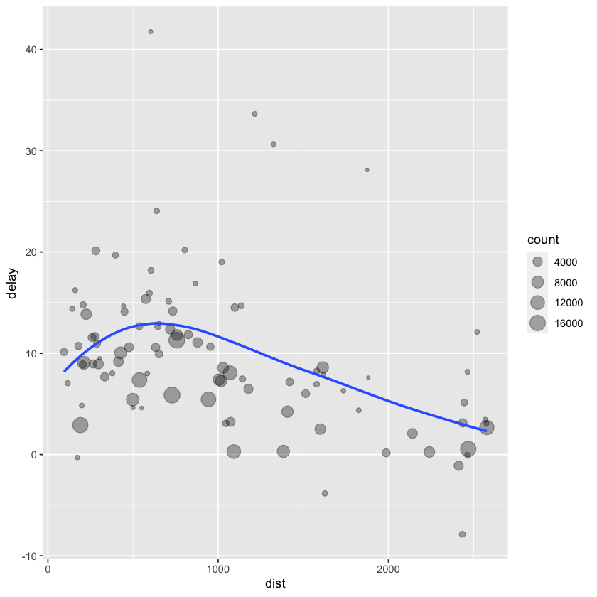

Data handling a
summarize, mutate
| year | month | day | dep_time | sched_dep_time | dep_delay | arr_time | sched_arr_time | arr_delay | carrier | flight | tailnum | origin | dest | air_time | distance | hour | minute | time_hour |
|---|---|---|---|---|---|---|---|---|---|---|---|---|---|---|---|---|---|---|
| <int> | <int> | <int> | <int> | <int> | <dbl> | <int> | <int> | <dbl> | <chr> | <int> | <chr> | <chr> | <chr> | <dbl> | <dbl> | <dbl> | <dbl> | <dttm> |
| 2013 | 1 | 1 | 517 | 515 | 2 | 830 | 819 | 11 | UA | 1545 | N14228 | EWR | IAH | 227 | 1400 | 5 | 15 | 2013-01-01 05:00:00 |
| 2013 | 1 | 1 | 533 | 529 | 4 | 850 | 830 | 20 | UA | 1714 | N24211 | LGA | IAH | 227 | 1416 | 5 | 29 | 2013-01-01 05:00:00 |
| 2013 | 1 | 1 | 542 | 540 | 2 | 923 | 850 | 33 | AA | 1141 | N619AA | JFK | MIA | 160 | 1089 | 5 | 40 | 2013-01-01 05:00:00 |
| 2013 | 1 | 1 | 544 | 545 | -1 | 1004 | 1022 | -18 | B6 | 725 | N804JB | JFK | BQN | 183 | 1576 | 5 | 45 | 2013-01-01 05:00:00 |
| 2013 | 1 | 1 | 554 | 600 | -6 | 812 | 837 | -25 | DL | 461 | N668DN | LGA | ATL | 116 | 762 | 6 | 0 | 2013-01-01 06:00:00 |
| 2013 | 1 | 1 | 554 | 558 | -4 | 740 | 728 | 12 | UA | 1696 | N39463 | EWR | ORD | 150 | 719 | 5 | 58 | 2013-01-01 05:00:00 |
dttm는 데이트-타임형(날짜 + 시간) 의미
| year | month | day | dep_time | sched_dep_time | dep_delay | arr_time | sched_arr_time | arr_delay | carrier | flight | tailnum | origin | dest | air_time | distance | hour | minute | time_hour |
|---|---|---|---|---|---|---|---|---|---|---|---|---|---|---|---|---|---|---|
| <int> | <int> | <int> | <int> | <int> | <dbl> | <int> | <int> | <dbl> | <chr> | <int> | <chr> | <chr> | <chr> | <dbl> | <dbl> | <dbl> | <dbl> | <dttm> |
| 2013 | 1 | 1 | 517 | 515 | 2 | 830 | 819 | 11 | UA | 1545 | N14228 | EWR | IAH | 227 | 1400 | 5 | 15 | 2013-01-01 05:00:00 |
| 2013 | 1 | 1 | 533 | 529 | 4 | 850 | 830 | 20 | UA | 1714 | N24211 | LGA | IAH | 227 | 1416 | 5 | 29 | 2013-01-01 05:00:00 |
| 2013 | 1 | 1 | 542 | 540 | 2 | 923 | 850 | 33 | AA | 1141 | N619AA | JFK | MIA | 160 | 1089 | 5 | 40 | 2013-01-01 05:00:00 |
| 2013 | 1 | 1 | 544 | 545 | -1 | 1004 | 1022 | -18 | B6 | 725 | N804JB | JFK | BQN | 183 | 1576 | 5 | 45 | 2013-01-01 05:00:00 |
| 2013 | 1 | 1 | 554 | 600 | -6 | 812 | 837 | -25 | DL | 461 | N668DN | LGA | ATL | 116 | 762 | 6 | 0 | 2013-01-01 06:00:00 |
| 2013 | 1 | 1 | 554 | 558 | -4 | 740 | 728 | 12 | UA | 1696 | N39463 | EWR | ORD | 150 | 719 | 5 | 58 | 2013-01-01 05:00:00 |
| year | month | day | dep_time | sched_dep_time | dep_delay | arr_time | sched_arr_time | arr_delay | carrier | flight | tailnum | origin | dest | air_time | distance | hour | minute | time_hour |
|---|---|---|---|---|---|---|---|---|---|---|---|---|---|---|---|---|---|---|
| <int> | <int> | <int> | <int> | <int> | <dbl> | <int> | <int> | <dbl> | <chr> | <int> | <chr> | <chr> | <chr> | <dbl> | <dbl> | <dbl> | <dbl> | <dttm> |
| 2013 | 11 | 1 | 5 | 2359 | 6 | 352 | 345 | 7 | B6 | 745 | N568JB | JFK | PSE | 205 | 1617 | 23 | 59 | 2013-11-01 23:00:00 |
| 2013 | 11 | 1 | 35 | 2250 | 105 | 123 | 2356 | 87 | B6 | 1816 | N353JB | JFK | SYR | 36 | 209 | 22 | 50 | 2013-11-01 22:00:00 |
| 2013 | 11 | 1 | 455 | 500 | -5 | 641 | 651 | -10 | US | 1895 | N192UW | EWR | CLT | 88 | 529 | 5 | 0 | 2013-11-01 05:00:00 |
| 2013 | 11 | 1 | 539 | 545 | -6 | 856 | 827 | 29 | UA | 1714 | N38727 | LGA | IAH | 229 | 1416 | 5 | 45 | 2013-11-01 05:00:00 |
| 2013 | 11 | 1 | 542 | 545 | -3 | 831 | 855 | -24 | AA | 2243 | N5CLAA | JFK | MIA | 147 | 1089 | 5 | 45 | 2013-11-01 05:00:00 |
| 2013 | 11 | 1 | 549 | 600 | -11 | 912 | 923 | -11 | UA | 303 | N595UA | JFK | SFO | 359 | 2586 | 6 | 0 | 2013-11-01 06:00:00 |
%in% : 이 안에 있는 모든 것 꺼냄
| year | month | day | dep_time | sched_dep_time | dep_delay | arr_time | sched_arr_time | arr_delay | carrier | flight | tailnum | origin | dest | air_time | distance | hour | minute | time_hour |
|---|---|---|---|---|---|---|---|---|---|---|---|---|---|---|---|---|---|---|
| <int> | <int> | <int> | <int> | <int> | <dbl> | <int> | <int> | <dbl> | <chr> | <int> | <chr> | <chr> | <chr> | <dbl> | <dbl> | <dbl> | <dbl> | <dttm> |
| 2013 | 12 | 31 | NA | 855 | NA | NA | 1142 | NA | UA | 1506 | NA | EWR | JAC | NA | 1874 | 8 | 55 | 2013-12-31 08:00:00 |
| 2013 | 12 | 31 | NA | 705 | NA | NA | 931 | NA | UA | 1729 | NA | EWR | DEN | NA | 1605 | 7 | 5 | 2013-12-31 07:00:00 |
| 2013 | 12 | 31 | NA | 825 | NA | NA | 1029 | NA | US | 1831 | NA | JFK | CLT | NA | 541 | 8 | 25 | 2013-12-31 08:00:00 |
| 2013 | 12 | 31 | NA | 1615 | NA | NA | 1800 | NA | MQ | 3301 | N844MQ | LGA | RDU | NA | 431 | 16 | 15 | 2013-12-31 16:00:00 |
| 2013 | 12 | 31 | NA | 600 | NA | NA | 735 | NA | UA | 219 | NA | EWR | ORD | NA | 719 | 6 | 0 | 2013-12-31 06:00:00 |
| 2013 | 12 | 31 | NA | 830 | NA | NA | 1154 | NA | UA | 443 | NA | JFK | LAX | NA | 2475 | 8 | 30 | 2013-12-31 08:00:00 |
| year | month | day | dep_time | sched_dep_time | dep_delay | arr_time | sched_arr_time | arr_delay | carrier | flight | tailnum | origin | dest | air_time | distance | hour | minute | time_hour |
|---|---|---|---|---|---|---|---|---|---|---|---|---|---|---|---|---|---|---|
| <int> | <int> | <int> | <int> | <int> | <dbl> | <int> | <int> | <dbl> | <chr> | <int> | <chr> | <chr> | <chr> | <dbl> | <dbl> | <dbl> | <dbl> | <dttm> |
| 2013 | 1 | 1 | 517 | 515 | 2 | 830 | 819 | 11 | UA | 1545 | N14228 | EWR | IAH | 227 | 1400 | 5 | 15 | 2013-01-01 05:00:00 |
| 2013 | 1 | 1 | 533 | 529 | 4 | 850 | 830 | 20 | UA | 1714 | N24211 | LGA | IAH | 227 | 1416 | 5 | 29 | 2013-01-01 05:00:00 |
| 2013 | 1 | 1 | 542 | 540 | 2 | 923 | 850 | 33 | AA | 1141 | N619AA | JFK | MIA | 160 | 1089 | 5 | 40 | 2013-01-01 05:00:00 |
| 2013 | 1 | 1 | 544 | 545 | -1 | 1004 | 1022 | -18 | B6 | 725 | N804JB | JFK | BQN | 183 | 1576 | 5 | 45 | 2013-01-01 05:00:00 |
| 2013 | 1 | 1 | 554 | 600 | -6 | 812 | 837 | -25 | DL | 461 | N668DN | LGA | ATL | 116 | 762 | 6 | 0 | 2013-01-01 06:00:00 |
| 2013 | 1 | 1 | 554 | 558 | -4 | 740 | 728 | 12 | UA | 1696 | N39463 | EWR | ORD | 150 | 719 | 5 | 58 | 2013-01-01 05:00:00 |
arrange : desc와 같이 정렬할 때 사용하는 filter
| year | month | day | dep_time | sched_dep_time | dep_delay | arr_time | sched_arr_time | arr_delay | carrier | flight | tailnum | origin | dest | air_time | distance | hour | minute | time_hour |
|---|---|---|---|---|---|---|---|---|---|---|---|---|---|---|---|---|---|---|
| <int> | <int> | <int> | <int> | <int> | <dbl> | <int> | <int> | <dbl> | <chr> | <int> | <chr> | <chr> | <chr> | <dbl> | <dbl> | <dbl> | <dbl> | <dttm> |
| 2013 | 1 | 9 | 641 | 900 | 1301 | 1242 | 1530 | 1272 | HA | 51 | N384HA | JFK | HNL | 640 | 4983 | 9 | 0 | 2013-01-09 09:00:00 |
| 2013 | 6 | 15 | 1432 | 1935 | 1137 | 1607 | 2120 | 1127 | MQ | 3535 | N504MQ | JFK | CMH | 74 | 483 | 19 | 35 | 2013-06-15 19:00:00 |
| 2013 | 1 | 10 | 1121 | 1635 | 1126 | 1239 | 1810 | 1109 | MQ | 3695 | N517MQ | EWR | ORD | 111 | 719 | 16 | 35 | 2013-01-10 16:00:00 |
| 2013 | 9 | 20 | 1139 | 1845 | 1014 | 1457 | 2210 | 1007 | AA | 177 | N338AA | JFK | SFO | 354 | 2586 | 18 | 45 | 2013-09-20 18:00:00 |
| 2013 | 7 | 22 | 845 | 1600 | 1005 | 1044 | 1815 | 989 | MQ | 3075 | N665MQ | JFK | CVG | 96 | 589 | 16 | 0 | 2013-07-22 16:00:00 |
| 2013 | 4 | 10 | 1100 | 1900 | 960 | 1342 | 2211 | 931 | DL | 2391 | N959DL | JFK | TPA | 139 | 1005 | 19 | 0 | 2013-04-10 19:00:00 |
select : 관심 있는 열만 보기
| year | month | day |
|---|---|---|
| <int> | <int> | <int> |
| 2013 | 1 | 1 |
| 2013 | 1 | 1 |
| 2013 | 1 | 1 |
| 2013 | 1 | 1 |
| 2013 | 1 | 1 |
| 2013 | 1 | 1 |
: a ~ b까지
| year | month | day | dep_time | sched_dep_time | dep_delay | arr_time | sched_arr_time | arr_delay |
|---|---|---|---|---|---|---|---|---|
| <int> | <int> | <int> | <int> | <int> | <dbl> | <int> | <int> | <dbl> |
| 2013 | 1 | 1 | 517 | 515 | 2 | 830 | 819 | 11 |
| 2013 | 1 | 1 | 533 | 529 | 4 | 850 | 830 | 20 |
| 2013 | 1 | 1 | 542 | 540 | 2 | 923 | 850 | 33 |
| 2013 | 1 | 1 | 544 | 545 | -1 | 1004 | 1022 | -18 |
| 2013 | 1 | 1 | 554 | 600 | -6 | 812 | 837 | -25 |
| 2013 | 1 | 1 | 554 | 558 | -4 | 740 | 728 | 12 |
| distance | hour | minute | time_hour |
|---|---|---|---|
| <dbl> | <dbl> | <dbl> | <dttm> |
| 1400 | 5 | 15 | 2013-01-01 05:00:00 |
| 1416 | 5 | 29 | 2013-01-01 05:00:00 |
| 1089 | 5 | 40 | 2013-01-01 05:00:00 |
| 1576 | 5 | 45 | 2013-01-01 05:00:00 |
| 762 | 6 | 0 | 2013-01-01 06:00:00 |
| 719 | 5 | 58 | 2013-01-01 05:00:00 |
- 추가
select()안에서 사용할 수 있는 함수들
-starts_with('abc'): ’abc’로 시작하는 이름에 매칭
-ends_with("xyz"): ’xyz’로 끝나는 이름에 매칭
-contains('abc'): ’abc’를 포함한 이름에 매칭
-num_range('x', 1:3): x1,x2,x3에 매칭
rename : 변수명 변경
| year | month | day | dep_time | sched_dep_time | dep_delay | arr_time | sched_arr_time | arr_delay | carrier | flight | tail_num | origin | dest | air_time | distance | hour | minute | time_hour |
|---|---|---|---|---|---|---|---|---|---|---|---|---|---|---|---|---|---|---|
| <int> | <int> | <int> | <int> | <int> | <dbl> | <int> | <int> | <dbl> | <chr> | <int> | <chr> | <chr> | <chr> | <dbl> | <dbl> | <dbl> | <dbl> | <dttm> |
| 2013 | 1 | 1 | 517 | 515 | 2 | 830 | 819 | 11 | UA | 1545 | N14228 | EWR | IAH | 227 | 1400 | 5 | 15 | 2013-01-01 05:00:00 |
| 2013 | 1 | 1 | 533 | 529 | 4 | 850 | 830 | 20 | UA | 1714 | N24211 | LGA | IAH | 227 | 1416 | 5 | 29 | 2013-01-01 05:00:00 |
| 2013 | 1 | 1 | 542 | 540 | 2 | 923 | 850 | 33 | AA | 1141 | N619AA | JFK | MIA | 160 | 1089 | 5 | 40 | 2013-01-01 05:00:00 |
| 2013 | 1 | 1 | 544 | 545 | -1 | 1004 | 1022 | -18 | B6 | 725 | N804JB | JFK | BQN | 183 | 1576 | 5 | 45 | 2013-01-01 05:00:00 |
| 2013 | 1 | 1 | 554 | 600 | -6 | 812 | 837 | -25 | DL | 461 | N668DN | LGA | ATL | 116 | 762 | 6 | 0 | 2013-01-01 06:00:00 |
| 2013 | 1 | 1 | 554 | 558 | -4 | 740 | 728 | 12 | UA | 1696 | N39463 | EWR | ORD | 150 | 719 | 5 | 58 | 2013-01-01 05:00:00 |
everything: 몇 개의 변수를 데이터프레임 시작 부분으로 옮기고 싶을 때 사용
| time_hour | air_time | year | month | day | dep_time | sched_dep_time | dep_delay | arr_time | sched_arr_time | arr_delay | carrier | flight | tailnum | origin | dest | distance | hour | minute |
|---|---|---|---|---|---|---|---|---|---|---|---|---|---|---|---|---|---|---|
| <dttm> | <dbl> | <int> | <int> | <int> | <int> | <int> | <dbl> | <int> | <int> | <dbl> | <chr> | <int> | <chr> | <chr> | <chr> | <dbl> | <dbl> | <dbl> |
| 2013-01-01 05:00:00 | 227 | 2013 | 1 | 1 | 517 | 515 | 2 | 830 | 819 | 11 | UA | 1545 | N14228 | EWR | IAH | 1400 | 5 | 15 |
| 2013-01-01 05:00:00 | 227 | 2013 | 1 | 1 | 533 | 529 | 4 | 850 | 830 | 20 | UA | 1714 | N24211 | LGA | IAH | 1416 | 5 | 29 |
| 2013-01-01 05:00:00 | 160 | 2013 | 1 | 1 | 542 | 540 | 2 | 923 | 850 | 33 | AA | 1141 | N619AA | JFK | MIA | 1089 | 5 | 40 |
| 2013-01-01 05:00:00 | 183 | 2013 | 1 | 1 | 544 | 545 | -1 | 1004 | 1022 | -18 | B6 | 725 | N804JB | JFK | BQN | 1576 | 5 | 45 |
| 2013-01-01 06:00:00 | 116 | 2013 | 1 | 1 | 554 | 600 | -6 | 812 | 837 | -25 | DL | 461 | N668DN | LGA | ATL | 762 | 6 | 0 |
| 2013-01-01 05:00:00 | 150 | 2013 | 1 | 1 | 554 | 558 | -4 | 740 | 728 | 12 | UA | 1696 | N39463 | EWR | ORD | 719 | 5 | 58 |
mutate : 새로운 변수 데이터셋 마지막에 추가
| year | month | day | dep_delay | arr_delay | distance | air_time | gain | speed |
|---|---|---|---|---|---|---|---|---|
| <int> | <int> | <int> | <dbl> | <dbl> | <dbl> | <dbl> | <dbl> | <dbl> |
| 2013 | 1 | 1 | 2 | 11 | 1400 | 227 | 9 | 370.0441 |
| 2013 | 1 | 1 | 4 | 20 | 1416 | 227 | 16 | 374.2731 |
| 2013 | 1 | 1 | 2 | 33 | 1089 | 160 | 31 | 408.3750 |
| 2013 | 1 | 1 | -1 | -18 | 1576 | 183 | -17 | 516.7213 |
| 2013 | 1 | 1 | -6 | -25 | 762 | 116 | -19 | 394.1379 |
| 2013 | 1 | 1 | -4 | 12 | 719 | 150 | 16 | 287.6000 |
transmute : mutate에서 새 변수만 남기기
transmute(flights,
gain = arr_delay - dep_delay,
hours = air_time / 60,
gain_per_hour = gain / hour) %>% head| gain | hours | gain_per_hour |
|---|---|---|
| <dbl> | <dbl> | <dbl> |
| 9 | 3.783333 | 1.800000 |
| 16 | 3.783333 | 3.200000 |
| 31 | 2.666667 | 6.200000 |
| -17 | 3.050000 | -3.400000 |
| -19 | 1.933333 | -3.166667 |
| 16 | 2.500000 | 3.200000 |
%/% : 나누고 정수만 표기
%% : 나머지
lag : 한 칸 밀기
lead : 한 칸 당기기
cumsum : 누적 합
cummean : 누적 평균
6. summarize로 그룹화 요약
summarise는group_by와 함께 써야 유용
`summarise()` has grouped output by 'year', 'month'. You can override using the
`.groups` argument.| year | month | day | delay |
|---|---|---|---|
| <int> | <int> | <int> | <dbl> |
| 2013 | 1 | 1 | 11.548926 |
| 2013 | 1 | 2 | 13.858824 |
| 2013 | 1 | 3 | 10.987832 |
| 2013 | 1 | 4 | 8.951595 |
| 2013 | 1 | 5 | 5.732218 |
| 2013 | 1 | 6 | 7.148014 |
| 2013 | 1 | 7 | 5.417204 |
| 2013 | 1 | 8 | 2.553073 |
| 2013 | 1 | 9 | 2.276477 |
| 2013 | 1 | 10 | 2.844995 |
| 2013 | 1 | 11 | 2.817193 |
| 2013 | 1 | 12 | 1.596491 |
| 2013 | 1 | 13 | 19.873153 |
| 2013 | 1 | 14 | 2.792657 |
| 2013 | 1 | 15 | 0.123723 |
| 2013 | 1 | 16 | 24.612865 |
| 2013 | 1 | 17 | 7.648148 |
| 2013 | 1 | 18 | 6.765864 |
| 2013 | 1 | 19 | 3.475483 |
| 2013 | 1 | 20 | 6.783887 |
| 2013 | 1 | 21 | 7.831858 |
| 2013 | 1 | 22 | 12.499435 |
| 2013 | 1 | 23 | 10.610360 |
| 2013 | 1 | 24 | 19.465423 |
| 2013 | 1 | 25 | 21.898534 |
| 2013 | 1 | 26 | 7.213115 |
| 2013 | 1 | 27 | 8.377943 |
| 2013 | 1 | 28 | 15.138533 |
| 2013 | 1 | 29 | 2.497149 |
| 2013 | 1 | 30 | 28.623441 |
| ⋮ | ⋮ | ⋮ | ⋮ |
| 2013 | 12 | 2 | 9.021978 |
| 2013 | 12 | 3 | 5.975258 |
| 2013 | 12 | 4 | 5.366316 |
| 2013 | 12 | 5 | 52.327990 |
| 2013 | 12 | 6 | 16.134509 |
| 2013 | 12 | 7 | 4.860327 |
| 2013 | 12 | 8 | 21.515337 |
| 2013 | 12 | 9 | 34.800221 |
| 2013 | 12 | 10 | 26.465494 |
| 2013 | 12 | 11 | 7.058263 |
| 2013 | 12 | 12 | 7.527518 |
| 2013 | 12 | 13 | 5.256995 |
| 2013 | 12 | 14 | 28.361552 |
| 2013 | 12 | 15 | 19.573871 |
| 2013 | 12 | 16 | 11.741127 |
| 2013 | 12 | 17 | 40.705602 |
| 2013 | 12 | 18 | 14.008395 |
| 2013 | 12 | 19 | 16.372165 |
| 2013 | 12 | 20 | 17.266254 |
| 2013 | 12 | 21 | 20.344956 |
| 2013 | 12 | 22 | 29.239865 |
| 2013 | 12 | 23 | 32.254149 |
| 2013 | 12 | 24 | 6.765957 |
| 2013 | 12 | 25 | 7.552448 |
| 2013 | 12 | 26 | 14.417204 |
| 2013 | 12 | 27 | 10.937630 |
| 2013 | 12 | 28 | 7.981550 |
| 2013 | 12 | 29 | 22.309551 |
| 2013 | 12 | 30 | 10.698113 |
| 2013 | 12 | 31 | 6.996053 |
| dest | count | dist | delay |
|---|---|---|---|
| <chr> | <int> | <dbl> | <dbl> |
| ABQ | 254 | 1826.0000 | 4.381890 |
| ACK | 265 | 199.0000 | 4.852273 |
| ALB | 439 | 143.0000 | 14.397129 |
| ANC | 8 | 3370.0000 | -2.500000 |
| ATL | 17215 | 757.1082 | 11.300113 |
| AUS | 2439 | 1514.2530 | 6.019909 |
| dest | count | dist | delay |
|---|---|---|---|
| <chr> | <int> | <dbl> | <dbl> |
| ABQ | 254 | 1826.0000 | 4.381890 |
| ACK | 265 | 199.0000 | 4.852273 |
| ALB | 439 | 143.0000 | 14.397129 |
| ATL | 17215 | 757.1082 | 11.300113 |
| AUS | 2439 | 1514.2530 | 6.019909 |
| AVL | 275 | 583.5818 | 8.003831 |
ggplot(data = delay, mapping = aes(x = dist, y = delay)) +
geom_point(aes(size = count), alpha = 1/3) +
geom_smooth(se = FALSE)`geom_smooth()` using method = 'loess' and formula 'y ~ x'

| dest | count | dist | delay |
|---|---|---|---|
| <chr> | <int> | <dbl> | <dbl> |
| ABQ | 254 | 1826.0000 | 4.381890 |
| ACK | 265 | 199.0000 | 4.852273 |
| ALB | 439 | 143.0000 | 14.397129 |
| ATL | 17215 | 757.1082 | 11.300113 |
| AUS | 2439 | 1514.2530 | 6.019909 |
| AVL | 275 | 583.5818 | 8.003831 |
`summarise()` has grouped output by 'year', 'month'. You can override using the
`.groups` argument.| year | month | day | mean |
|---|---|---|---|
| <int> | <int> | <int> | <dbl> |
| 2013 | 1 | 1 | 11.548926 |
| 2013 | 1 | 2 | 13.858824 |
| 2013 | 1 | 3 | 10.987832 |
| 2013 | 1 | 4 | 8.951595 |
| 2013 | 1 | 5 | 5.732218 |
| 2013 | 1 | 6 | 7.148014 |
| year | month | day | dep_time | sched_dep_time | dep_delay | arr_time | sched_arr_time | arr_delay | carrier | flight | tailnum | origin | dest | air_time | distance | hour | minute | time_hour |
|---|---|---|---|---|---|---|---|---|---|---|---|---|---|---|---|---|---|---|
| <int> | <int> | <int> | <int> | <int> | <dbl> | <int> | <int> | <dbl> | <chr> | <int> | <chr> | <chr> | <chr> | <dbl> | <dbl> | <dbl> | <dbl> | <dttm> |
| 2013 | 1 | 1 | 517 | 515 | 2 | 830 | 819 | 11 | UA | 1545 | N14228 | EWR | IAH | 227 | 1400 | 5 | 15 | 2013-01-01 05:00:00 |
| 2013 | 1 | 1 | 533 | 529 | 4 | 850 | 830 | 20 | UA | 1714 | N24211 | LGA | IAH | 227 | 1416 | 5 | 29 | 2013-01-01 05:00:00 |
| 2013 | 1 | 1 | 542 | 540 | 2 | 923 | 850 | 33 | AA | 1141 | N619AA | JFK | MIA | 160 | 1089 | 5 | 40 | 2013-01-01 05:00:00 |
| 2013 | 1 | 1 | 544 | 545 | -1 | 1004 | 1022 | -18 | B6 | 725 | N804JB | JFK | BQN | 183 | 1576 | 5 | 45 | 2013-01-01 05:00:00 |
| 2013 | 1 | 1 | 554 | 600 | -6 | 812 | 837 | -25 | DL | 461 | N668DN | LGA | ATL | 116 | 762 | 6 | 0 | 2013-01-01 06:00:00 |
| 2013 | 1 | 1 | 554 | 558 | -4 | 740 | 728 | 12 | UA | 1696 | N39463 | EWR | ORD | 150 | 719 | 5 | 58 | 2013-01-01 05:00:00 |
`summarise()` has grouped output by 'year', 'month'. You can override using the
`.groups` argument.| year | month | day | mean |
|---|---|---|---|
| <int> | <int> | <int> | <dbl> |
| 2013 | 1 | 1 | 11.435620 |
| 2013 | 1 | 2 | 13.677802 |
| 2013 | 1 | 3 | 10.907778 |
| 2013 | 1 | 4 | 8.965859 |
| 2013 | 1 | 5 | 5.732218 |
| 2013 | 1 | 6 | 7.145959 |
| tailnum | delay |
|---|---|
| <chr> | <dbl> |
| D942DN | 31.500000 |
| N0EGMQ | 9.982955 |
| N10156 | 12.717241 |
| N102UW | 2.937500 |
| N103US | -6.934783 |
| N104UW | 1.804348 |
geom_freqpoly : 요약된 수치 값들의 분포를 보여주는(알아서 구간 cut하고 histplot내주는)
- 애초에 평균으로 요약된 데이터로 구한 plot으로 특정 한공기 종류는 도착 지연시간 평균이 300분을 넘어가는 것을 볼 수 있다.
| tailnum | delay | n |
|---|---|---|
| <chr> | <dbl> | <int> |
| D942DN | 31.500000 | 4 |
| N0EGMQ | 9.982955 | 352 |
| N10156 | 12.717241 | 145 |
| N102UW | 2.937500 | 48 |
| N103US | -6.934783 | 46 |
| N104UW | 1.804348 | 46 |
- 해석 : n은 해당 비행기 기종의 운행 횟수를 나타낸 것으로 운행횟수가 많이질수록 평균 지연시간의 변동폭이 적어짐을 알 수 있다.(평균이기에)
반대로 평균 운행횟수가 적은 경우 변동폭이 비교적 더 큼.
not_cancelled %>%
group_by(year, month, day) %>%
summarize(
avg_delay1 = mean(arr_delay),
avg_delay2 = mean(arr_delay[arr_delay > 0])
) %>% head`summarise()` has grouped output by 'year', 'month'. You can override using the
`.groups` argument.| year | month | day | avg_delay1 | avg_delay2 |
|---|---|---|---|---|
| <int> | <int> | <int> | <dbl> | <dbl> |
| 2013 | 1 | 1 | 12.651023 | 32.48156 |
| 2013 | 1 | 2 | 12.692888 | 32.02991 |
| 2013 | 1 | 3 | 5.733333 | 27.66087 |
| 2013 | 1 | 4 | -1.932819 | 28.30976 |
| 2013 | 1 | 5 | -1.525802 | 22.55882 |
| 2013 | 1 | 6 | 4.236429 | 24.37270 |
not_cancelled %>%
group_by(dest) %>%
summarize(distance_sd = sd(distance)) %>%
arrange(desc(distance_sd)) %>% head| dest | distance_sd |
|---|---|
| <chr> | <dbl> |
| EGE | 10.542765 |
| SAN | 10.350094 |
| SFO | 10.216017 |
| HNL | 10.004197 |
| SEA | 9.977993 |
| LAS | 9.907786 |
not_cancelled %>%
group_by(year, month, day) %>%
summarize(
first = min(dep_time),
last = max(dep_time)
) %>% head`summarise()` has grouped output by 'year', 'month'. You can override using the
`.groups` argument.| year | month | day | first | last |
|---|---|---|---|---|
| <int> | <int> | <int> | <int> | <int> |
| 2013 | 1 | 1 | 517 | 2356 |
| 2013 | 1 | 2 | 42 | 2354 |
| 2013 | 1 | 3 | 32 | 2349 |
| 2013 | 1 | 4 | 25 | 2358 |
| 2013 | 1 | 5 | 14 | 2357 |
| 2013 | 1 | 6 | 16 | 2355 |
range : 범위를 알려주는 함수
최솟값과 최댓값을 표시
not_cancelled %>%
group_by(year, month, day) %>%
mutate(r = min_rank(desc(dep_time))) %>%
filter(r %in% range(r)) %>% head| year | month | day | dep_time | sched_dep_time | dep_delay | arr_time | sched_arr_time | arr_delay | carrier | flight | tailnum | origin | dest | air_time | distance | hour | minute | time_hour | r |
|---|---|---|---|---|---|---|---|---|---|---|---|---|---|---|---|---|---|---|---|
| <int> | <int> | <int> | <int> | <int> | <dbl> | <int> | <int> | <dbl> | <chr> | <int> | <chr> | <chr> | <chr> | <dbl> | <dbl> | <dbl> | <dbl> | <dttm> | <int> |
| 2013 | 1 | 1 | 517 | 515 | 2 | 830 | 819 | 11 | UA | 1545 | N14228 | EWR | IAH | 227 | 1400 | 5 | 15 | 2013-01-01 05:00:00 | 831 |
| 2013 | 1 | 1 | 2356 | 2359 | -3 | 425 | 437 | -12 | B6 | 727 | N588JB | JFK | BQN | 186 | 1576 | 23 | 59 | 2013-01-01 23:00:00 | 1 |
| 2013 | 1 | 2 | 42 | 2359 | 43 | 518 | 442 | 36 | B6 | 707 | N580JB | JFK | SJU | 189 | 1598 | 23 | 59 | 2013-01-02 23:00:00 | 928 |
| 2013 | 1 | 2 | 2354 | 2359 | -5 | 413 | 437 | -24 | B6 | 727 | N789JB | JFK | BQN | 180 | 1576 | 23 | 59 | 2013-01-02 23:00:00 | 1 |
| 2013 | 1 | 3 | 32 | 2359 | 33 | 504 | 442 | 22 | B6 | 707 | N763JB | JFK | SJU | 193 | 1598 | 23 | 59 | 2013-01-03 23:00:00 | 900 |
| 2013 | 1 | 3 | 2349 | 2359 | -10 | 434 | 445 | -11 | B6 | 739 | N729JB | JFK | PSE | 199 | 1617 | 23 | 59 | 2013-01-03 23:00:00 | 1 |
n_distinct : 유일값 개수 카운트
여기서는 각 도착지마다의 항공사의 종류 갯수를 나타냄
not_cancelled %>%
group_by(dest) %>%
summarize(carriers = n_distinct(carrier)) %>%
arrange(desc(carriers)) %>% head| dest | carriers |
|---|---|
| <chr> | <int> |
| ATL | 7 |
| BOS | 7 |
| CLT | 7 |
| ORD | 7 |
| TPA | 7 |
| AUS | 6 |
- 이건 각 지역으로 가는 도착 총 항공편 수
- 해당 항공기가 비행한 총 마일 수
wt : weight약자로 count()에서 사용시 가중 합을 의미
summarize()의 sum과 mean의미
- sum
여기서 sum(x > 10), mean(y == 0) 같은 거 사용하면 결과 값이 TRUE, FALSE로 나오기에 밑에 결과값처럼
summarize(sum())의 결과 값은 TRUE 의 합(개수)을 알려줌.summarize(mean())의 경우 비율을 알려줌.
- mean
- day
위의 경고문 grouping한거에
summarize를 또 씌울 때 나타나는 말이다.
바깥에()를 한번 씌워주면 뒤에서부터 변수 날리면서 통합시켜서summarize해줌.
여기서는 day 날아감, 그리고 day의 한 단계 위인 해당 month로 통합
한번 더 한다면 month 날리고 그에 해당하는 영역(같은year)까지 통합시킨 결과 보여줌.
- month
- year
- 주의 사항
이러한 점진적 요약할때 sum과 count는 괜찮으나 중앙값의 경우 그룹별 중앙값의 중앙값은 실제 전체 중앙값과 다르다.
ungroup : 그룹화 제거
7. mutate로 그룹화 요약
group_by는summarize()에서 가장 유용하지만mutate()와filter()에서도 가능